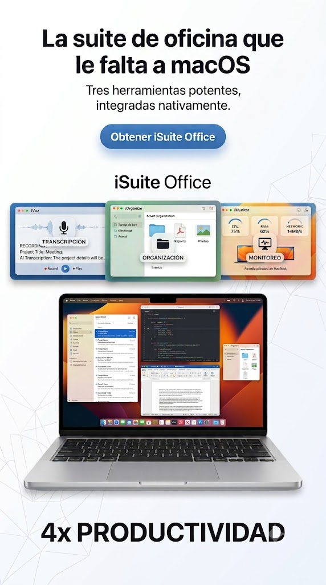
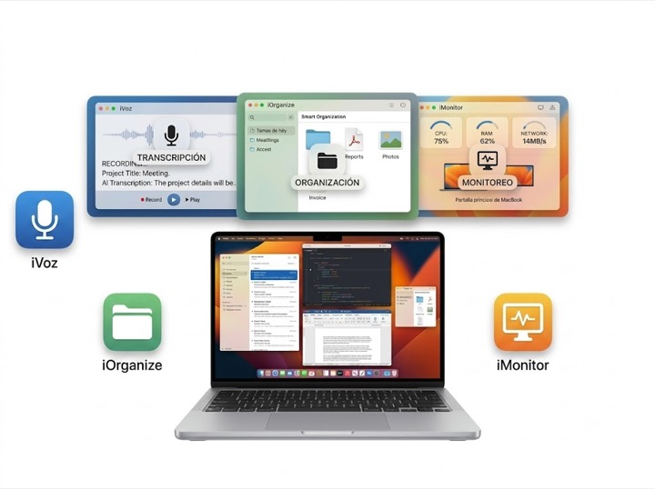
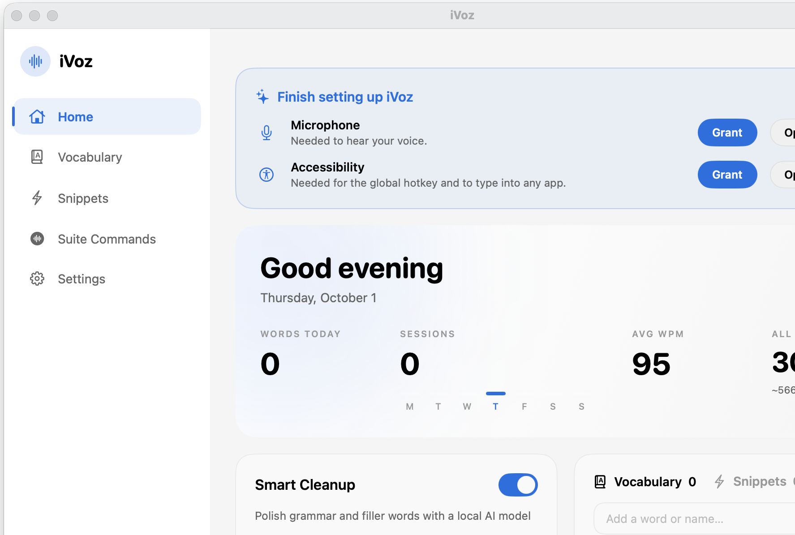
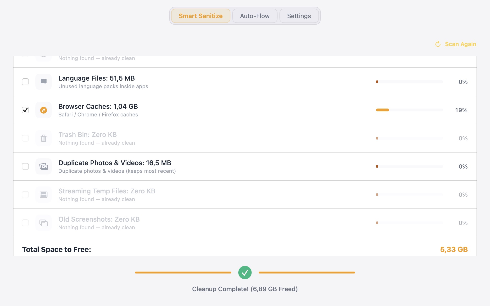
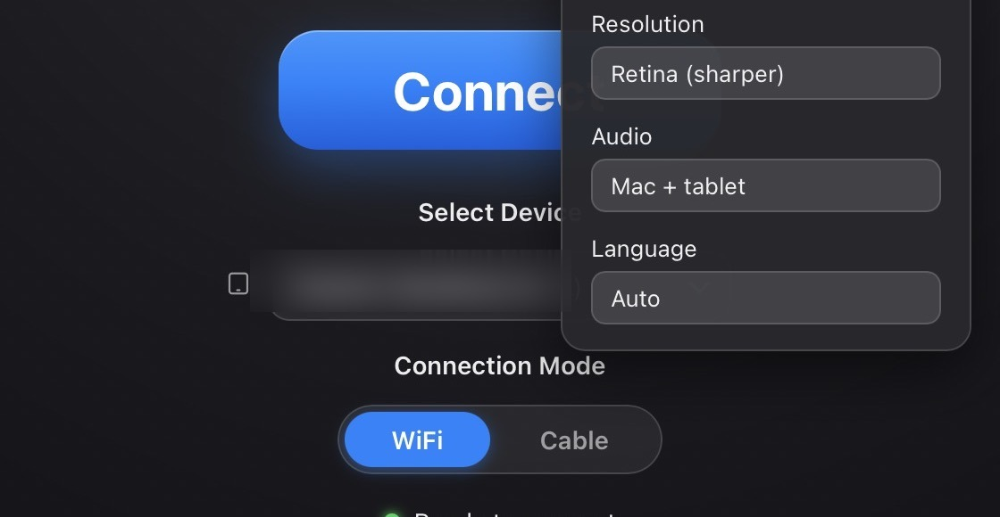
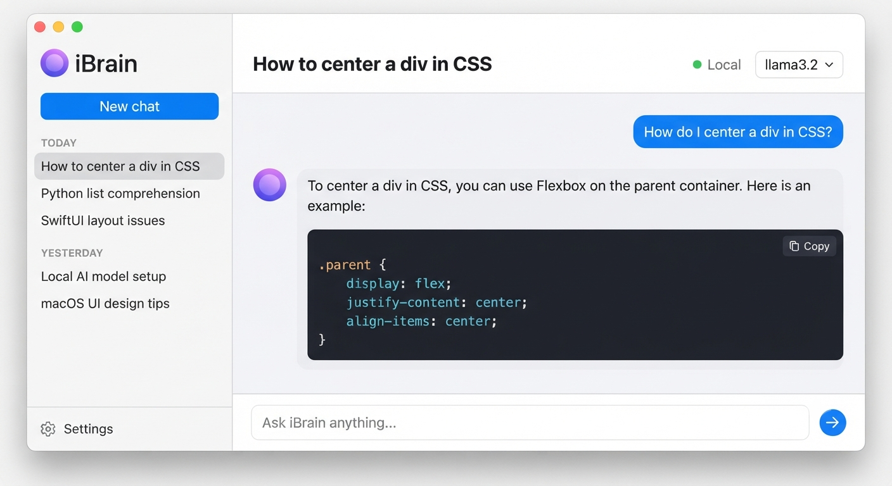
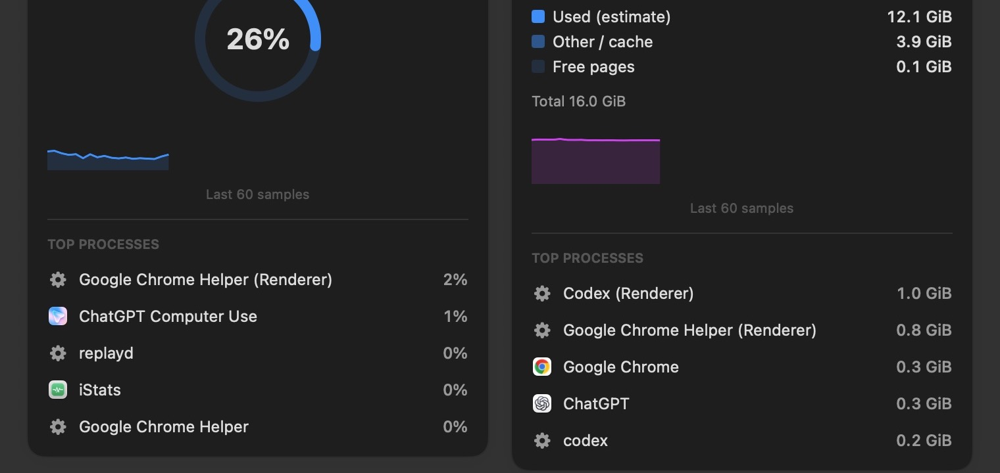

iVoz: Habla con tu Mac como nunca.
-
check_circle
Inteligencia en el Dispositivo
La transcripción se procesa localmente con modelos descargados. El pulido opcional de texto puede usar un modelo local adicional.
-
check_circle
Escribe Más Rápido Sin Tipear
Dicta en aplicaciones compatibles. La primera configuración requiere descargar los modelos necesarios.

iOrganize: El espacio de trabajo sin desorden.
-
check_circle
Sanitización Inteligente
Escanea archivos candidatos, revisa los resultados y elige qué mover o eliminar.
-
check_circle
Reglas Automáticas
Crea reglas locales de organización y revísalas antes de depender de acciones automatizadas.

Screen Bridge: Cerrando la brecha.
-
check_circle
Compatibilidad experimental
La conexión depende de la versión de macOS, el dispositivo y la red local; no todos los equipos son compatibles.
-
check_circle
Rendimiento variable
La vista remota usa la red local. Puede haber latencia visible y el proyecto sigue siendo experimental.

iBrain: modelos locales con proveedores opcionales.
Usa Ollama en tu Mac o elige OpenAI/Anthropic. Los mensajes y el historial se envían al proveedor cuando eliges un modelo alojado. Las claves se guardan en Llavero de macOS.
Swift · SwiftUI · Ollama · Keychain
Código y notas de desarrollo
iStats: una utilidad compacta para tu Mac.
Consulta CPU, estimaciones de memoria y actividad de red/disco desde la barra de menú. Son métricas de la utilidad, no una reproducción exacta de Activity Monitor.
Swift · SwiftUI · Swift Charts · AppKit
Código y notas de desarrollo
Proyectos personales para macOS
Herramientas personales para macOS: voz, archivos, conectividad, IA local y métricas del sistema.
Proyectos personales para macOS
Herramientas personales para macOS: voz, archivos, conectividad, IA local y métricas del sistema.
iVoz
Descubre todas las características de transcripción inteligente y cómo iVoz transforma tu forma de capturar ideas.
iOrganize
Revisa los archivos candidatos a limpieza y organiza carpetas con reglas locales.
Screen Bridge
Screen Bridge es un proyecto experimental de pantalla en red local. La compatibilidad y el rendimiento varían según el dispositivo y la red.